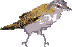

Product Destruction & Logic Prototyping
Pre-damage assessment for complex feature flags. Deterministic trace of the evaluation path so your bugs don't fly south.
Decoupled configuration values shared across flags and platforms. Define once, propagate everywhere — no more hunting through N flags to change a discount rate.
Multi-content learning loops directly in the personalization queue. Bandit-powered optimization for teams that want to deliver and learn simultaneously.
AI targeting against hand-built targeting, same content, one goal, one rule. Two groups, one population, overlap settled by a stable coin-flip so no bird is counted twice.
